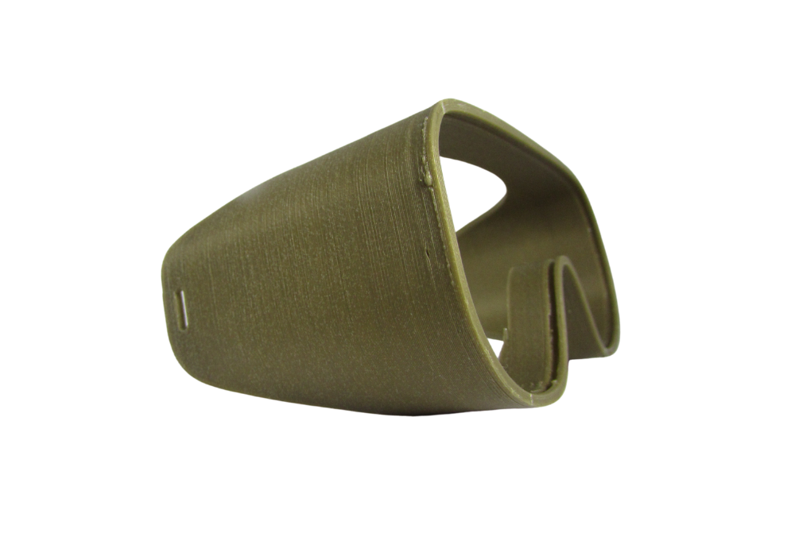
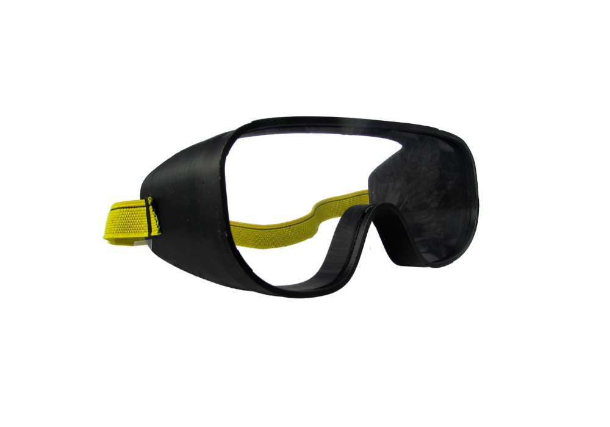

Prototipos
En búsqueda de la forma adecuada
Prototipo de prueba
Como resultado de la etapa inicial de diseño se fabrica el primer prototitpo de prueba a partir del cual se decide repensar el terminal por el cual se insertará la correa de ajuste a cabeza.
Con el fin de garantizar el mayor nivel de seguridad, se decide cerrar todo tipo de ranuras , reemplazandolas así, por terminales de sujeción externos.
Prototipo Final
Se introducen los cambios establecidos en la fase de experimentación con el protottipo de prueba, es decir, se produce un modelo con capacidad hermética , libre de agujeros y ranuras . Este producto final cuenta con terminales externos a los cuales se fijará la correa de ajuste el cual permite una mayor manipulación para adaptar la protección a cabeza según necesidad de medidas.
El visor anterior es de carácter intercambiable, esto gracias a un sistema de rieles interiores que permite adaptar fácilmente láminas protectoras sucias o deterioradas para su recambio periódico.
